Hololive是繼彩虹社、偶像部之後竄起的liver，用意就是藉由空媽的名氣來拉抬新人，
只可惜發生了各種事故，造成一期生除了狐狸以外沒有太大起色。
二期之後狐狸開始動作，對於3D化進行干涉，引進gamers招募新人， 整頓整個hololive的體制，企圖讓hololive由一盤散沙的狀態成一個箱， 組成了OKFAMS的團體，積極對外合作，在liver市場逐漸站穩步伐。
三期箱推的成功則捲起巨大的浪潮，又因為與碧藍航線合作的關係，到達過去未曾有的頂峰狀態。四期新血加入後，又再度引發全新的注目。在朝ココ的推波助瀾下，目前可以說是整個箱的全盛時期。
五期生加入之後一個月，Hololive EN橫空出世，引爆歐美巨大的浪潮，在海外市場獲得巨大的成功。
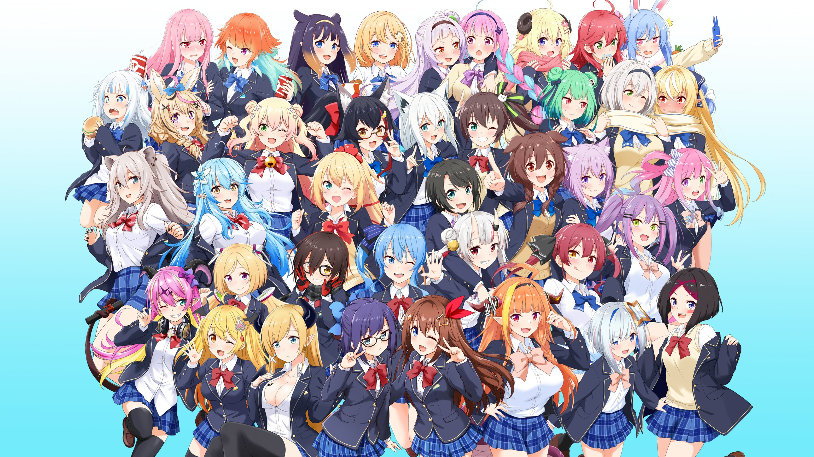
二期之後狐狸開始動作，對於3D化進行干涉，引進gamers招募新人， 整頓整個hololive的體制，企圖讓hololive由一盤散沙的狀態成一個箱， 組成了OKFAMS的團體，積極對外合作，在liver市場逐漸站穩步伐。
三期箱推的成功則捲起巨大的浪潮，又因為與碧藍航線合作的關係，到達過去未曾有的頂峰狀態。四期新血加入後，又再度引發全新的注目。在朝ココ的推波助瀾下，目前可以說是整個箱的全盛時期。
五期生加入之後一個月，Hololive EN橫空出世，引爆歐美巨大的浪潮，在海外市場獲得巨大的成功。
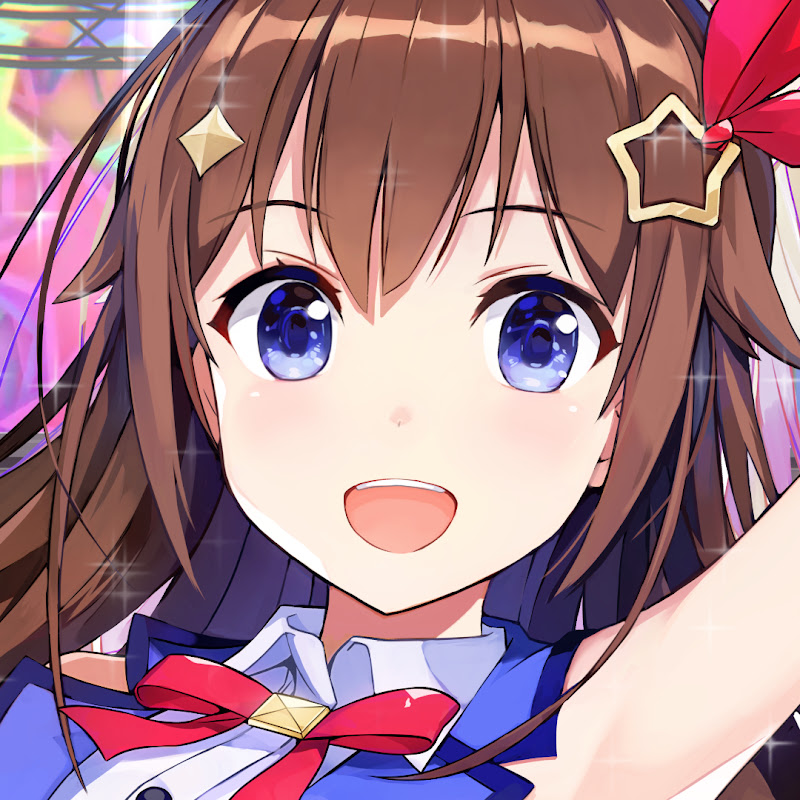
ときのそら (空媽)：
跟四天王幾乎同時期存在的元祖vtuber，走王道偶像唱歌路線，外加點滿的恐怖耐性，以及媽媽般的包容力，讓視聽者都退化成了幼稚園小孩。
近期轉變風格開始在家直播一些雜談或是演奏練習，偶爾也有懷舊以及恐怖遊戲。 已經成功舉辦過兩次的個人演唱會。
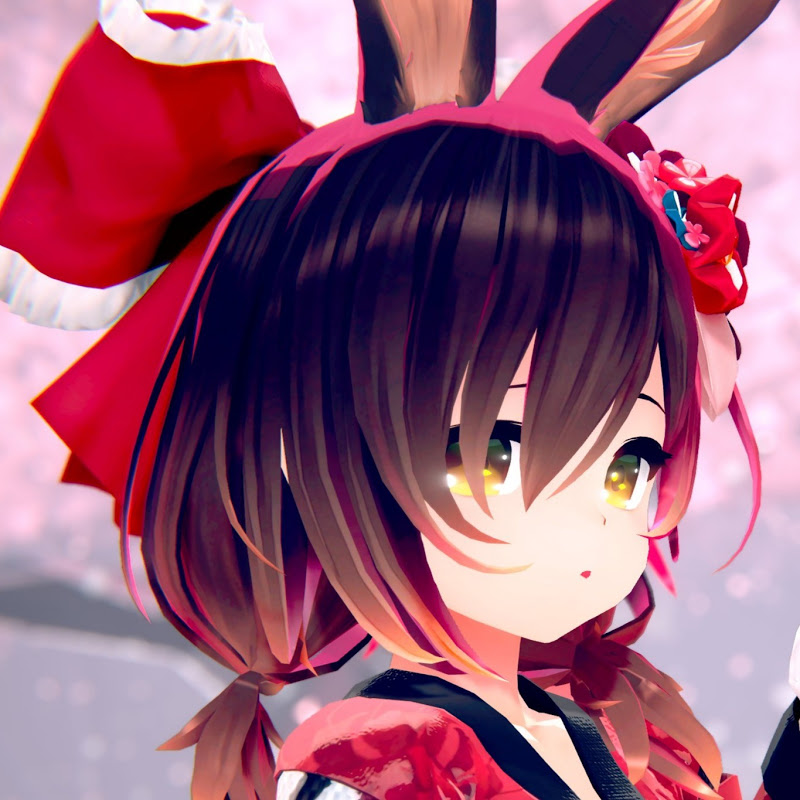 ロボ子さん (蘿蔔子/RBC)：
kuromaru9氏依照自己的愛好所製成的3D模組，後來賣給公司， 相較於一期生算是很早就出道，走穩扎穩打實況路線，除了固定放送外突擊放送也非常頻繁， 外交實力很強，雖然自稱高性能機器人，但是常常被觀眾嘲諷”這就是高性能 ”。 也曾經與彩虹社的阿凜、楓合作過，但是個人特色不強，因此人氣上升速度只能算普通， 由於海外兄貴大量湧入hololive，出現不知道RBC是hololive 0期生的窘境。
.jpg) 星街すいせい：
星街すいせい：
個人勢轉進hololive的成員，以唱歌勢出道，除唱歌之外也擅長繪圖以及專精俄羅斯方塊， 遊戲能力不錯，在雪山人狼以及宇宙人狼中表現出狂人的一面。在3D演唱會大放異彩，人氣大幅成長。
號稱六邊形戰士，意思是樣樣都通，意外的是英文能力卻不怎麼樣。
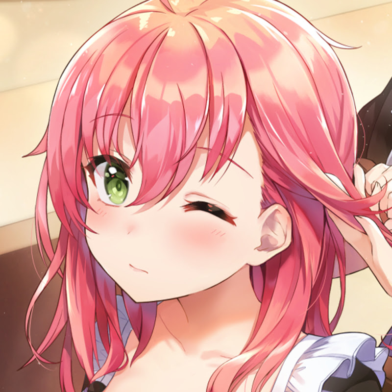 さくらみこ(巫女/35)：
過去為cover獨立於hololive之外的vtuber，因為不人氣的關係最後跟hololive合併， 很喜歡エロgame，歸屬於hololive之後人氣上漲，與彩虹社的狗以及個人勢星月/書法家/板手關係不錯， 目前因存在感太稀薄成為不人氣角色之一。
但因GTA5的尼哥影片被外國人剪輯瘋狂轉推，意外造成海外人氣大漲，巫女也藉勢持續實況， 造就觀眾數量大增，長久的努力終於有了相當的回報。
為holo MC常客，常有自滅舉動，人氣穩定成長中，因為與三期生兔田打鬧很有趣聲勢大漲， 但遊戲還是常需要人介護，屬於凡人努力打拼上來的類型，一開始接觸可能沒甚麼特色， 但是知道她努力痕跡的人會默默支持她，證明無論多麼底邊或是沒特色還是有往上爬的一天。
之後瘋狂ARK被ARK官方關注，被認證為ARK廢人 (最近ARK時數有被巧可老師跟蘋果超越的跡象)。 因為先天遺傳疾病發作目前休養中，目前已經回歸。
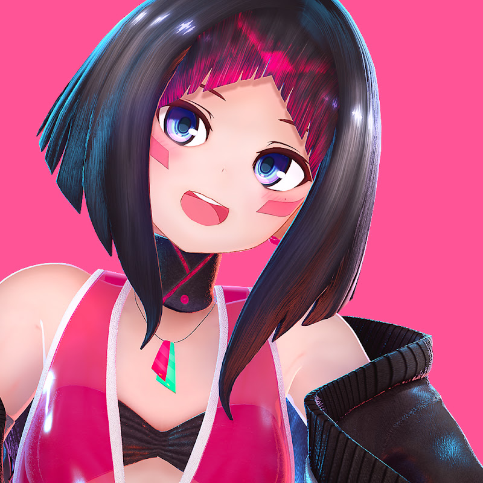 AZKi：
歌姬出道，雖然是cover公司的成員卻加入upd8，後期回歸hololive。
跟四天王幾乎同時期存在的元祖vtuber，走王道偶像唱歌路線，外加點滿的恐怖耐性，以及媽媽般的包容力，讓視聽者都退化成了幼稚園小孩。
近期轉變風格開始在家直播一些雜談或是演奏練習，偶爾也有懷舊以及恐怖遊戲。 已經成功舉辦過兩次的個人演唱會。
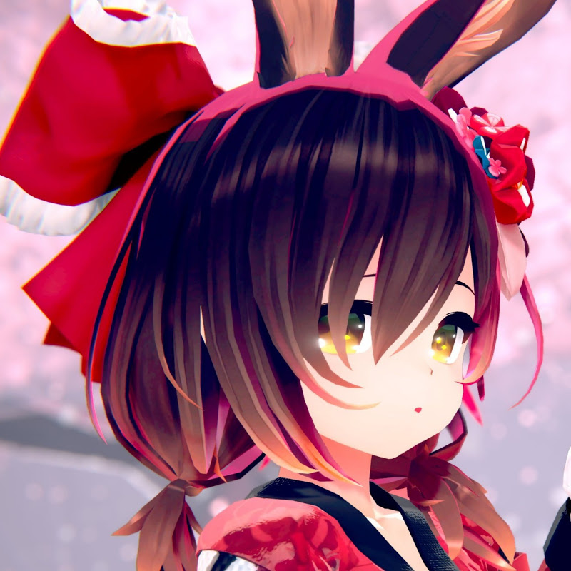 ロボ子さん (蘿蔔子/RBC)：
kuromaru9氏依照自己的愛好所製成的3D模組，後來賣給公司， 相較於一期生算是很早就出道，走穩扎穩打實況路線，除了固定放送外突擊放送也非常頻繁， 外交實力很強，雖然自稱高性能機器人，但是常常被觀眾嘲諷”這就是高性能 ”。 也曾經與彩虹社的阿凜、楓合作過，但是個人特色不強，因此人氣上升速度只能算普通， 由於海外兄貴大量湧入hololive，出現不知道RBC是hololive 0期生的窘境。
星街すいせい：個人勢轉進hololive的成員，以唱歌勢出道，除唱歌之外也擅長繪圖以及專精俄羅斯方塊， 遊戲能力不錯，在雪山人狼以及宇宙人狼中表現出狂人的一面。在3D演唱會大放異彩，人氣大幅成長。
號稱六邊形戰士，意思是樣樣都通，意外的是英文能力卻不怎麼樣。
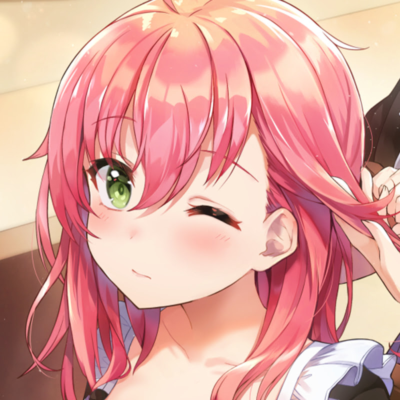 さくらみこ(巫女/35)：
過去為cover獨立於hololive之外的vtuber，因為不人氣的關係最後跟hololive合併， 很喜歡エロgame，歸屬於hololive之後人氣上漲，與彩虹社的狗以及個人勢星月/書法家/板手關係不錯， 目前因存在感太稀薄成為不人氣角色之一。
但因GTA5的尼哥影片被外國人剪輯瘋狂轉推，意外造成海外人氣大漲，巫女也藉勢持續實況， 造就觀眾數量大增，長久的努力終於有了相當的回報。
為holo MC常客，常有自滅舉動，人氣穩定成長中，因為與三期生兔田打鬧很有趣聲勢大漲， 但遊戲還是常需要人介護，屬於凡人努力打拼上來的類型，一開始接觸可能沒甚麼特色， 但是知道她努力痕跡的人會默默支持她，證明無論多麼底邊或是沒特色還是有往上爬的一天。
之後瘋狂ARK被ARK官方關注，被認證為ARK廢人 (最近ARK時數有被巧可老師跟蘋果超越的跡象)。 因為先天遺傳疾病發作目前休養中，目前已經回歸。
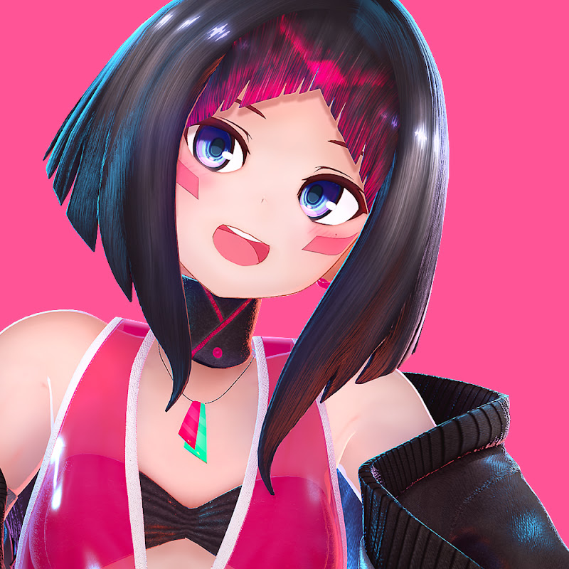 AZKi：
歌姬出道，雖然是cover公司的成員卻加入upd8，後期回歸hololive。
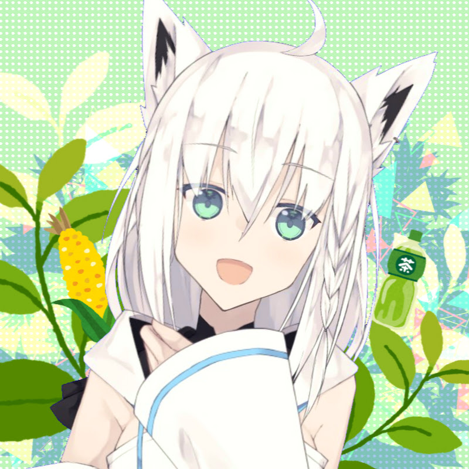
白上フブキ (狐狸/FBK)：
hololive一期生，唯一在hololive中以驚人速度成長的liver，以可愛的聲音跟貓叫聲著名， 偶爾會黑化展現帥氣的聲線。FGO廢人，非常喜歡克蘇魯系列的TRPG， 繪圖/唱歌/料理/遊戲/MMD無一不精，跟任何vtuber都能合作， 不論是跟偶像部/彩虹社/有閒喫茶/ 各個バ美肉大叔 都建立良好的關係， 不愧是吹雪(さすフブ)，擁有七色聲線，能扮演TRPG任何角色。 由於初放送時把すき說成すこ，後來就將錯就錯把代表物當成玉米(Corn)。 擅長的遊戲是麥塊終界龍RTA跟DbD的豬女。
個性十分深謀遠慮，對於司儀以及vtuber對應十分擅長，具有強大的野心跟慾望。 成立hololive gamers，FAMS成員之一。之後將gamers也加了近來組成了OKFAMS，在ARK流行時期扮演可靠的凱瑟琳媽媽。
近期因愚人節促成新的團體バカタレ共(笨蛋同盟)，一起玩恐怖遊戲或是看蠟筆小新劇場版等節目。在20年8月21號因為船長跟詩音早晨線下會沒準時開台，特別開了一台待機實況，整整雜談了4個小時，誕生了2詩音=1ババ的新名詞。
將Phasmophobia這款抓鬼遊戲玩破百等，帶團一起與成員同樂。
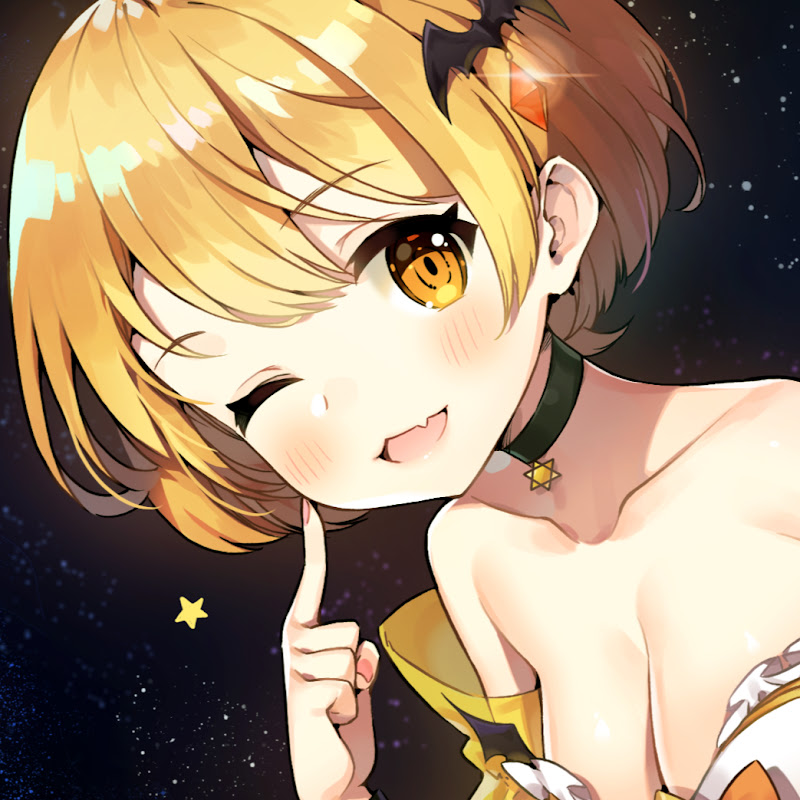 夜空メル ：
hololive一期生，從外部請來的打手，原來經營的youtube頻道已超過10萬人， 以ASMR實況為主，放送頻率很低，因此人氣上升緩慢，開始嘗試不同實況風格， 但由於YT君對金髮巨乳審查嚴格，頻道經常被隱藏。
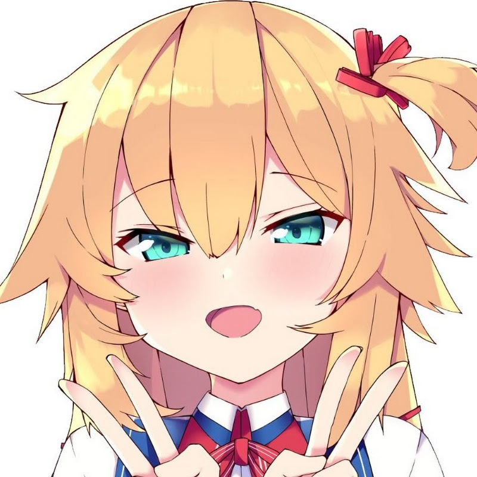 赤井はあと (はあちゃま)：
hololive一期生，努力的代言人，有一陣子常常一日兩次實況，但早期因為2DLIVE沒調整好， 表情捕捉很怪，又有網路問題，導致人氣上不去，現在已經改善很多，傲嬌角色， 觀眾的代表物是被斬首的豬，英文能力不錯，遊戲能力差，以雜談為主，情緒浮動很大。
因ASMR使用羅莉當標題被水管取消收益化，反而激起對抗心頻繁實況， 用英語實況吸收了許多歐美觀眾，之後去菲律賓留學活動休止， 歐美觀眾則順利引導到4期生可可會長的頻道。
回澳洲後又積極開播，與會長合作良好，人氣大幅提升，自稱為はあちゃま， 澳洲狂人代表，目前已經從澳洲高中畢業回到日本。
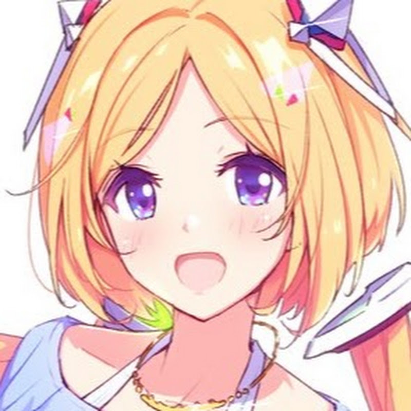 アキ・ローゼンタール (Aki/蘋果) ：
hololive一期生，人妻型 liver，由於早期網路問題失去了很多實況機會， 雖然後來有急起直追但為時已晚，屬於電腦白癡的類型，經常開深夜實況以及ASMR， 不人氣代表之一，因ASMR被水管取消收益化。
收益復原後積極經營ARK大成功，人氣大幅成長。
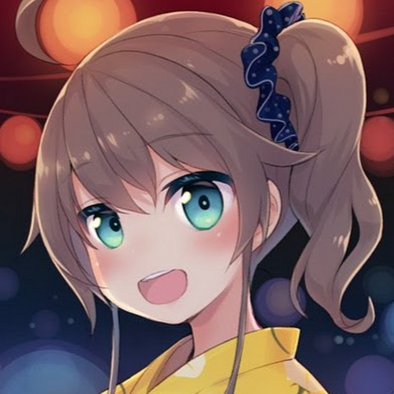 夏色まつり (祭)：
hololive一期生，一開始強烈的個性讓人印象深刻，擅長猩猩叫， 最初與吹雪合作時兩人就在百合營業，對狐狸求愛被拒絕， 因為本職是新人聲優很忙碌，前期沒有時間實況，個性又是蘿莉控大叔。
失去了竄紅的機會，最近雖然放送頻率增加但是表現保守許多。 與狐狸合作時，會用夏色吹雪當作標題，對於繪圖跟唱歌也非常拿手， 狐狼組團後，與吹雪的互動降低很多。
由於已經從聲優學校畢業，目前專心以實況為主， 在二期生各種開放的個性下逐漸恢復原有的下捏他性騷擾實況風格， 被會長稱為hololive的癌。
hololive一期生，唯一在hololive中以驚人速度成長的liver，以可愛的聲音跟貓叫聲著名， 偶爾會黑化展現帥氣的聲線。FGO廢人，非常喜歡克蘇魯系列的TRPG， 繪圖/唱歌/料理/遊戲/MMD無一不精，跟任何vtuber都能合作， 不論是跟偶像部/彩虹社/有閒喫茶/ 各個バ美肉大叔 都建立良好的關係， 不愧是吹雪(さすフブ)，擁有七色聲線，能扮演TRPG任何角色。 由於初放送時把すき說成すこ，後來就將錯就錯把代表物當成玉米(Corn)。 擅長的遊戲是麥塊終界龍RTA跟DbD的豬女。
個性十分深謀遠慮，對於司儀以及vtuber對應十分擅長，具有強大的野心跟慾望。 成立hololive gamers，FAMS成員之一。之後將gamers也加了近來組成了OKFAMS，在ARK流行時期扮演可靠的凱瑟琳媽媽。
近期因愚人節促成新的團體バカタレ共(笨蛋同盟)，一起玩恐怖遊戲或是看蠟筆小新劇場版等節目。在20年8月21號因為船長跟詩音早晨線下會沒準時開台，特別開了一台待機實況，整整雜談了4個小時，誕生了2詩音=1ババ的新名詞。
將Phasmophobia這款抓鬼遊戲玩破百等，帶團一起與成員同樂。
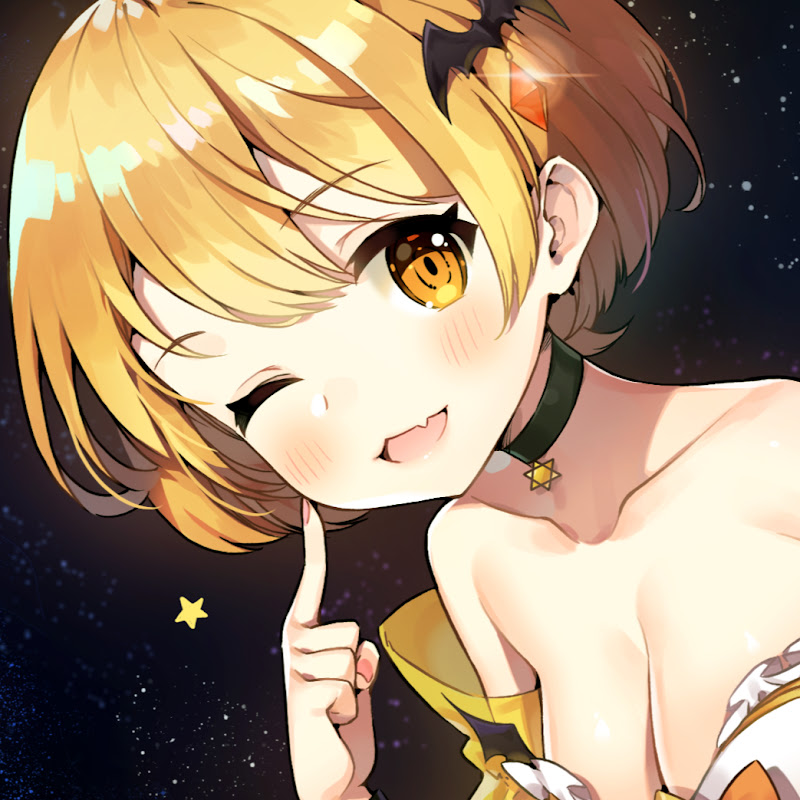 夜空メル ：
hololive一期生，從外部請來的打手，原來經營的youtube頻道已超過10萬人， 以ASMR實況為主，放送頻率很低，因此人氣上升緩慢，開始嘗試不同實況風格， 但由於YT君對金髮巨乳審查嚴格，頻道經常被隱藏。
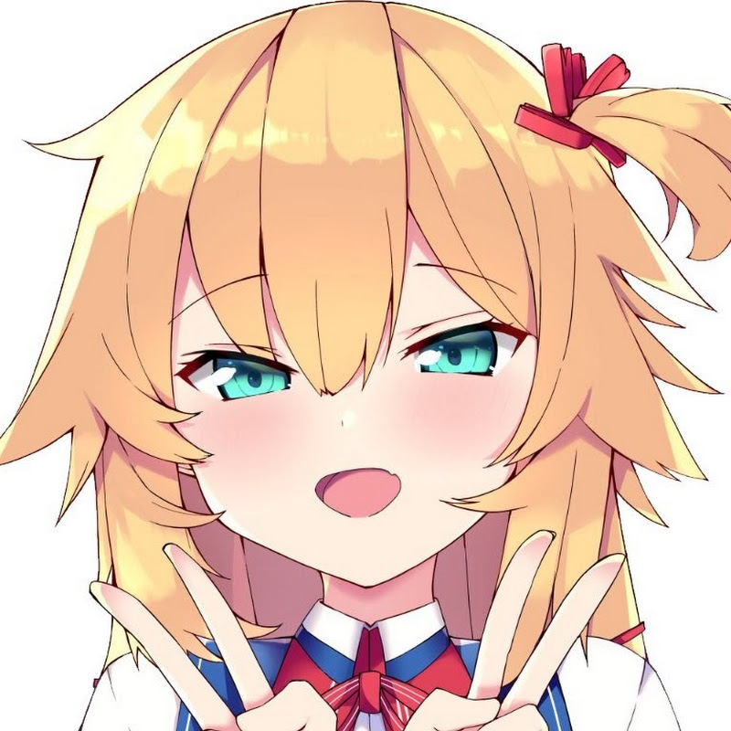 赤井はあと (はあちゃま)：
hololive一期生，努力的代言人，有一陣子常常一日兩次實況，但早期因為2DLIVE沒調整好， 表情捕捉很怪，又有網路問題，導致人氣上不去，現在已經改善很多，傲嬌角色， 觀眾的代表物是被斬首的豬，英文能力不錯，遊戲能力差，以雜談為主，情緒浮動很大。
因ASMR使用羅莉當標題被水管取消收益化，反而激起對抗心頻繁實況， 用英語實況吸收了許多歐美觀眾，之後去菲律賓留學活動休止， 歐美觀眾則順利引導到4期生可可會長的頻道。
回澳洲後又積極開播，與會長合作良好，人氣大幅提升，自稱為はあちゃま， 澳洲狂人代表，目前已經從澳洲高中畢業回到日本。
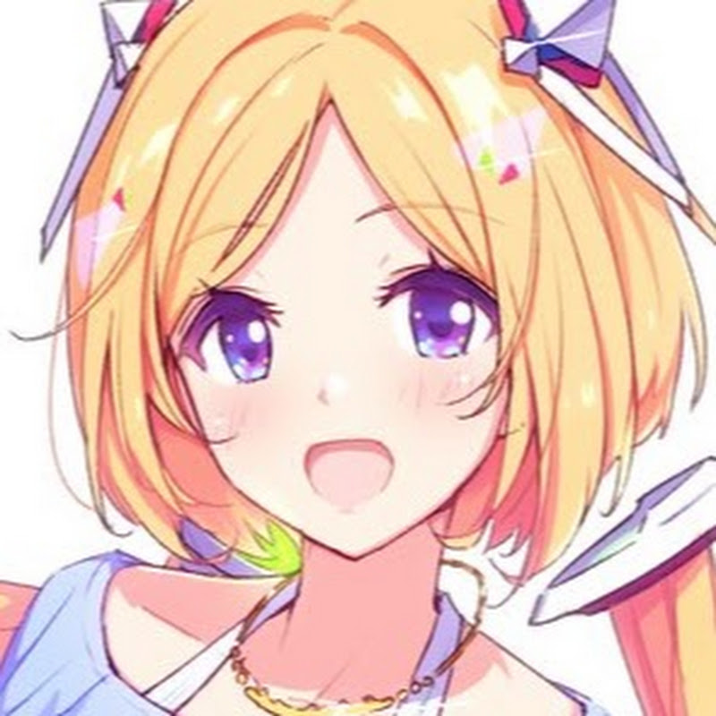 アキ・ローゼンタール (Aki/蘋果) ：
hololive一期生，人妻型 liver，由於早期網路問題失去了很多實況機會， 雖然後來有急起直追但為時已晚，屬於電腦白癡的類型，經常開深夜實況以及ASMR， 不人氣代表之一，因ASMR被水管取消收益化。
收益復原後積極經營ARK大成功，人氣大幅成長。
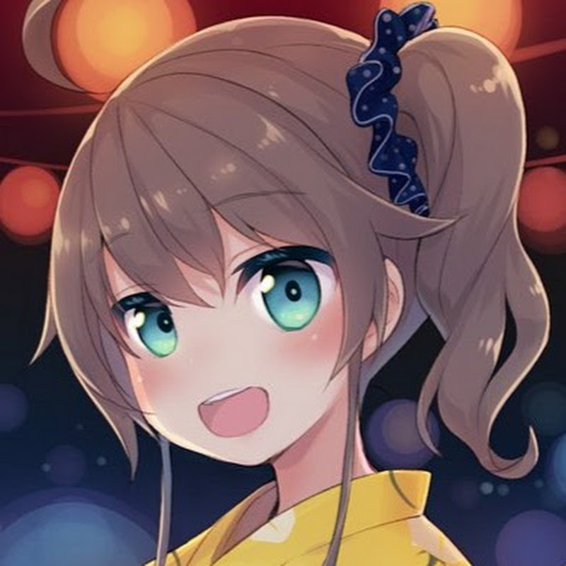 夏色まつり (祭)：
hololive一期生，一開始強烈的個性讓人印象深刻，擅長猩猩叫， 最初與吹雪合作時兩人就在百合營業，對狐狸求愛被拒絕， 因為本職是新人聲優很忙碌，前期沒有時間實況，個性又是蘿莉控大叔。
失去了竄紅的機會，最近雖然放送頻率增加但是表現保守許多。 與狐狸合作時，會用夏色吹雪當作標題，對於繪圖跟唱歌也非常拿手， 狐狼組團後，與吹雪的互動降低很多。
由於已經從聲優學校畢業，目前專心以實況為主， 在二期生各種開放的個性下逐漸恢復原有的下捏他性騷擾實況風格， 被會長稱為hololive的癌。
.jpg) 湊あくあ (女僕/Aqua)：
湊あくあ (女僕/Aqua)：hololive二期生最強王牌，笨手笨腳系女僕，非常努力在實況， 大多以遊戲為主，各種玩梗發狂企劃，聲音卻清純可愛造成反差萌。
FPS/TPS高手，有五次solo PUBG吃雞的實況，經常在PUBG跟麥塊自爆各種黑歷史， hololive職業廢人玩家，達成2周目無傷斬劍聖一心以及5周目隻狼58分破關， 金壺，歌唱能力很高，但英文/漢字/常識力很低。
24小時實況中的底特律變人創下hololive有史以來最高同時觀眾數(14036)， 之後觀眾數量激增，由於一年約到期與營運續約意見不合，而休息一周， 回歸後與營運達成協議繼續實況，之後又創下女性Vtuber第一個 馬力歐maker2第一位S帶以及用100殘機完成人氣100關卡的傳說。
在19年8月31號完成節奏天國全完美偉業，20年1月18號用共7小時半破關超魔界村。 一度以觀眾參加大亂鬥節目達到人氣頂峰，而後又因ARK 離開部落以及 大亂鬥職業選手亂入事件降低人氣，目前又瘋狂沉迷APEX。近期有10分內壺， Jump king通關等成績。
20年8月21號初次sololive演唱會，以新的3D婚紗造型亮麗演出。
20年11月15號大亂鬥耐久花費6小時15分進入VIP房。
.jpg) 紫咲シオン(詩音/小學生)：
紫咲シオン(詩音/小學生)：hololive二期生，死小孩性格，由於造型的關係受到各種蘿莉控繪師的關注， 創作的插畫品質最高也最豐富，但是缺乏企劃能力又有溝通障礙在人氣成長上受限。
曾經開台遲到過兩小時，狐狸開待機實況撐場了2小時， 此後奠定1詩音=2小時的遲到新單位。
之後因為跟女僕在麥塊互動而人氣提升，與會長的互動也誕生了シオンよ．．．名句， 是會長的無敵男友，人氣超幅成長，但因為到處出軌被會長認證為メスクソガキ。
.jpg) 百鬼あやめ：
百鬼あやめ：hololive二期生，由於人設的關係獲得不錯的關注度，呆萌型角色， 唱歌也很好聽，FAMS成員之一，記憶力很差，常時會進入虛無狀態。
沉迷於LOL以及APEX。
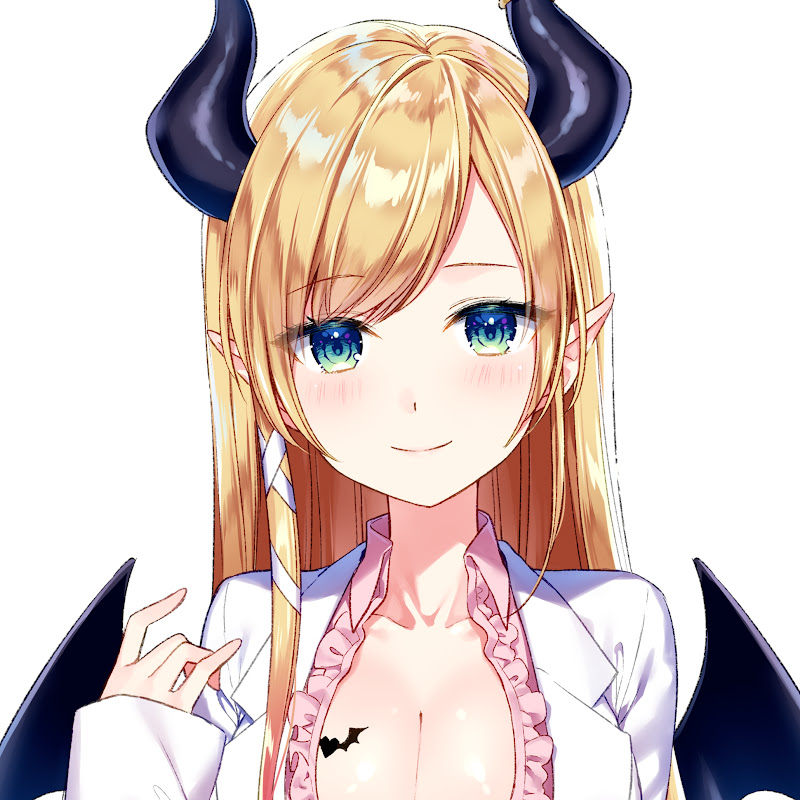 癒月ちょこ(巧可老師)：
hololive二期生，實況廢人，擅長DbD，對於合作企劃很拿手， 因為ASMR受到海外關注而訂閱數上漲，缺點是說話有輕微的大舌頭， 因ASMR被水管取消收益化。
收益化回復後努力經營其他項目，在ARK表現不錯人氣有回升的跡象， 由於金髮巨乳太過色情已經被YT君鎖定成隱藏常客。
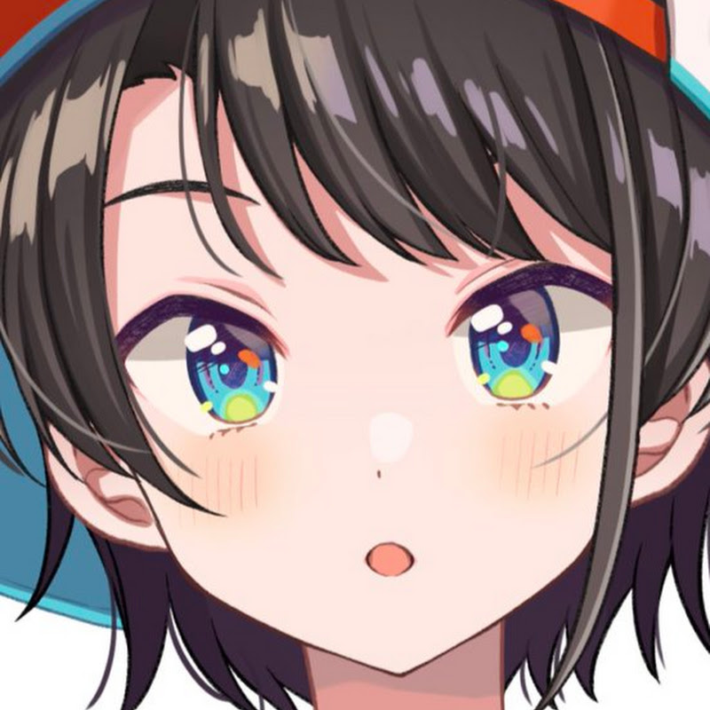 大空スバル (486)：
hololive二期生，搞笑型藝人，各種謎企劃，與原Seeds的舞元以及繪師時雨媽關係不錯， 所有成員中最自由的人，由於唐老鴨ASMR聲勢大漲，從最底層一路暴衝到中層， 也是內部連接彩虹社的橋梁，大家的開心果，FAMS成員之一。
白上フブキ (狐狸/FBK)：
hololive一期生，唯一在hololive中以驚人速度成長的liver，以可愛的聲音跟貓叫聲著名， 偶爾會黑化展現帥氣的聲線。FGO廢人，非常喜歡克蘇魯系列的TRPG， 繪圖/唱歌/料理/遊戲/MMD無一不精，跟任何vtuber都能合作， 不論是跟偶像部/彩虹社/有閒喫茶/ 各個バ美肉大叔 都建立良好的關係， 不愧是吹雪 (さすフブ)，擁有七色聲線，能扮演TRPG任何角色。 由於初放送時把すき說成すこ，後來就將錯就錯把代表物當成玉米(Corn)。 擅長的遊戲是麥塊終界龍RTA跟DbD的豬女。
個性十分深謀遠慮，對於司儀以及vtuber對應十分擅長，具有強大的野心跟慾望。 成立hololive gamers，FAMS成員之一。之後將gamers也加了近來組成了OKFAMS，在ARK流行時期扮演可靠的凱瑟琳媽媽。
近期因愚人節促成新的團體バカタレ共(笨蛋同盟)，一起玩恐怖遊戲或是看蠟筆小新劇場版等節目。在20年8月21號因為船長跟詩音早晨線下會沒準時開台，特別開了一台待機實況，整整雜談了4個小時，誕生了2詩音=1ババ的新名詞。
將Phasmophobia這款抓鬼遊戲玩破百等，帶團一起與成員同樂。
.jpg) 大神ミオ(狼媽)：
大神ミオ(狼媽)：
狐狸所企劃的組織，hololive gamers 成員，作為狐狸的親友登場， 經由狐狸的絕讚推廣，人氣快速上升中，擅長的遊戲是烏賊娘，個性認真， 為狐狸的副手，由於經驗老道加上台風很穩，擅長做整合箱內成員的企劃， FAMS成員之一，塔羅牌占卜節目很受歡迎，經常傾聽內部成員的心聲， 被當成hololive的母親，經常與486一起推行企劃。
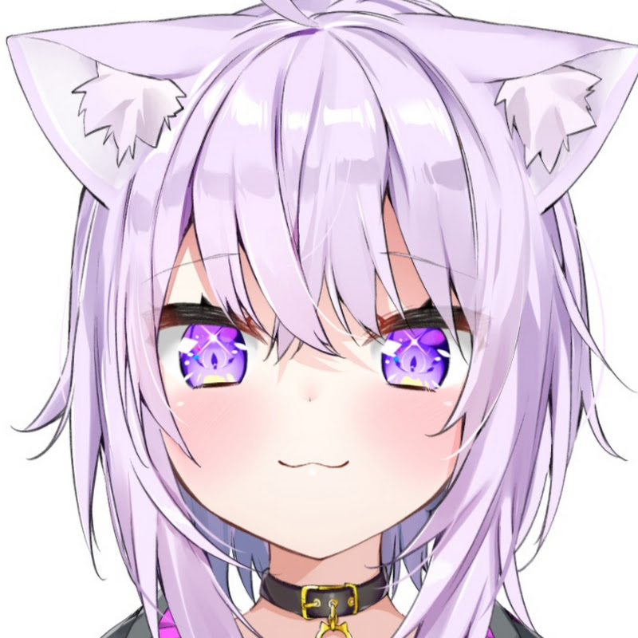 猫又おかゆ：
gamers一員，專精老遊戲，有沉穩的聲線，深夜放送時聽起來很舒適， 狗狗的介護者，唱歌時帥氣的聲線深受狐狸的賞識，個性懶散， 合作時性格會變成強勢的搞笑藝人，喜歡在holo MC中對其他人惡作劇。
.jpg) 戌神ころね(狗狗)：
戌神ころね(狗狗)：
gamers一員，未正式出道因在烏賊娘虐殺486，被冠稱"ぶっころね" 殺人狗的稱號， 初配信事故連連，需要其他三位gamers的看護，天然病嬌發言被視為新的問題兒童， 喜歡恐怖跟獵奇電影，但討厭蟲跟幽靈，各種奇言奇行讓實況很有趣，專長遊戲是烏賊娘。
以懷舊遊戲深夜耐久配信為主，風格為給社會人看的療育(病嬌)型老奶奶。
hololive一期生，唯一在hololive中以驚人速度成長的liver，以可愛的聲音跟貓叫聲著名， 偶爾會黑化展現帥氣的聲線。FGO廢人，非常喜歡克蘇魯系列的TRPG， 繪圖/唱歌/料理/遊戲/MMD無一不精，跟任何vtuber都能合作， 不論是跟偶像部/彩虹社/有閒喫茶/ 各個バ美肉大叔 都建立良好的關係， 不愧是吹雪 (さすフブ)，擁有七色聲線，能扮演TRPG任何角色。 由於初放送時把すき說成すこ，後來就將錯就錯把代表物當成玉米(Corn)。 擅長的遊戲是麥塊終界龍RTA跟DbD的豬女。
個性十分深謀遠慮，對於司儀以及vtuber對應十分擅長，具有強大的野心跟慾望。 成立hololive gamers，FAMS成員之一。之後將gamers也加了近來組成了OKFAMS，在ARK流行時期扮演可靠的凱瑟琳媽媽。
近期因愚人節促成新的團體バカタレ共(笨蛋同盟)，一起玩恐怖遊戲或是看蠟筆小新劇場版等節目。在20年8月21號因為船長跟詩音早晨線下會沒準時開台，特別開了一台待機實況，整整雜談了4個小時，誕生了2詩音=1ババ的新名詞。
將Phasmophobia這款抓鬼遊戲玩破百等，帶團一起與成員同樂。
大神ミオ(狼媽)：狐狸所企劃的組織，hololive gamers 成員，作為狐狸的親友登場， 經由狐狸的絕讚推廣，人氣快速上升中，擅長的遊戲是烏賊娘，個性認真， 為狐狸的副手，由於經驗老道加上台風很穩，擅長做整合箱內成員的企劃， FAMS成員之一，塔羅牌占卜節目很受歡迎，經常傾聽內部成員的心聲， 被當成hololive的母親，經常與486一起推行企劃。
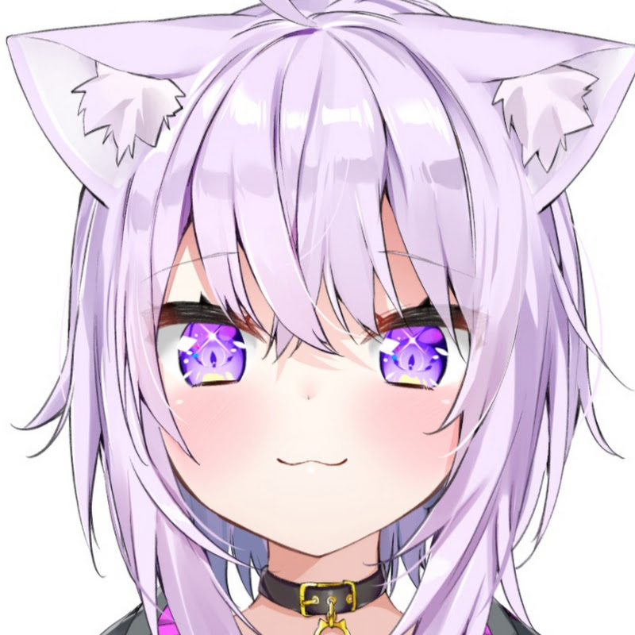 猫又おかゆ：
gamers一員，專精老遊戲，有沉穩的聲線，深夜放送時聽起來很舒適， 狗狗的介護者，唱歌時帥氣的聲線深受狐狸的賞識，個性懶散， 合作時性格會變成強勢的搞笑藝人，喜歡在holo MC中對其他人惡作劇。
戌神ころね(狗狗)：gamers一員，未正式出道因在烏賊娘虐殺486，被冠稱"ぶっころね" 殺人狗的稱號， 初配信事故連連，需要其他三位gamers的看護，天然病嬌發言被視為新的問題兒童， 喜歡恐怖跟獵奇電影，但討厭蟲跟幽靈，各種奇言奇行讓實況很有趣，專長遊戲是烏賊娘。
以懷舊遊戲深夜耐久配信為主，風格為給社會人看的療育(病嬌)型老奶奶。
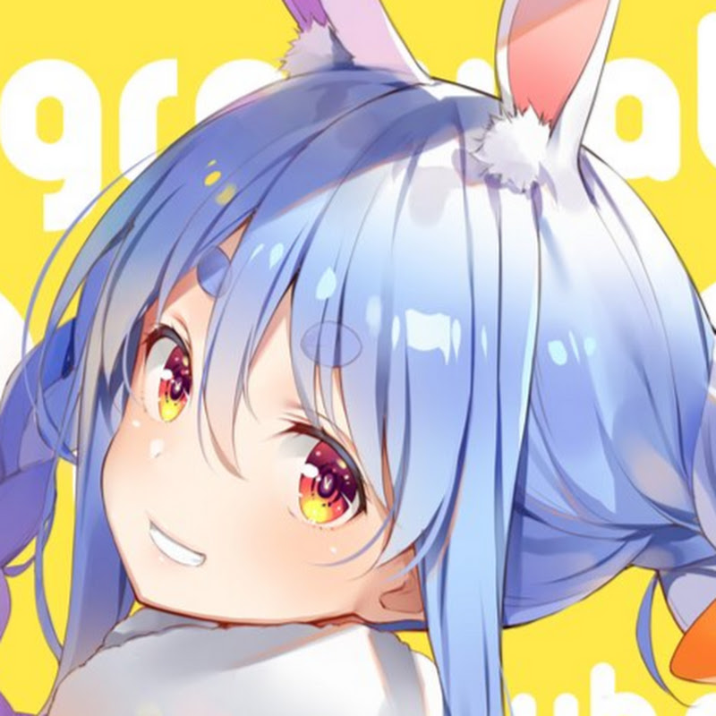
兎田ぺこら：
hololive三期生，語尾帶ぺこ，RAP藝人以及暴言擔當，遊戲反射神經還不錯， 努力家，唱歌能力跟女僕差不多。
在holo MC非常活躍，吸引了許多箱內觀眾，心理測試顯示為強勢腹黑策士愛錢性格。
三期生的王牌，與巫女有強大的信賴關係，唯一敢對其惡作劇的前輩。 由於有嚴重的交流障礙，線下時常常因為緊張存在感薄弱，被戲稱為網路弁慶。 破關超魔界村以及不使用即時存檔接關過完號稱最鬼畜的馬利歐2。
在ARK流行時一度組成CAMP ARK四大廢人，換地圖後遊玩時數下降， 沉迷於MGS後人氣超幅成長。
特徵是具備魔性的笑聲HA↗HA↘HA↗HA↘，在JP 麥塊伺服中建造了大量的自動工業建設，兔田建設為目前最強大的建設公司之一，也是與Moona相遇的關鍵。
.jpg) 潤羽るしあ(露西亞/初號機)：
潤羽るしあ(露西亞/初號機)：
hololive三期生，可愛擔當，有時會顯露出抖S的氣質，是電腦白痴，實況內容以手機恐怖遊戲，雜談，寶可夢等等。
在三期生線下會時解放性格，聲音出奇的大，一句"活該"徹底改變配信風格，成了遜炮奇聲藝人，換新衣裝後從綠毛變成粉毛。 由於初號機影片的關係，有更多人認識這位狂戰士。 對了，千萬不能在本人面前提起砧板或平坦這兩個字。
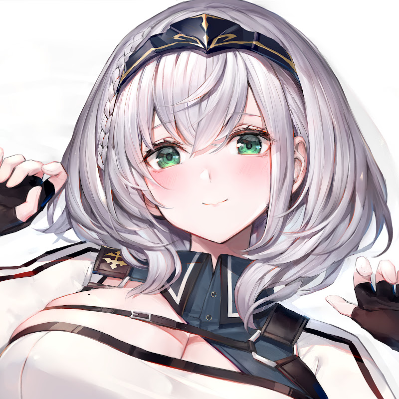 白銀ノエル(團長)：
hololive三期生，蠢萌エロ大姊姊擔當，不太擅長玩遊戲，清楚的SSR聲線出道2周訂閱隨即突破3萬人，一舉超越率先出道的兔田與死靈。
腦筋團長的實況內容以雜談或是ASMR居多，玩遊戲需要人介護，因ASMR被水管取消收益化。
收益化回復後將ASMR改成立體音響，食量很大，非常喜歡牛肉丼飯，與不知火是一對。
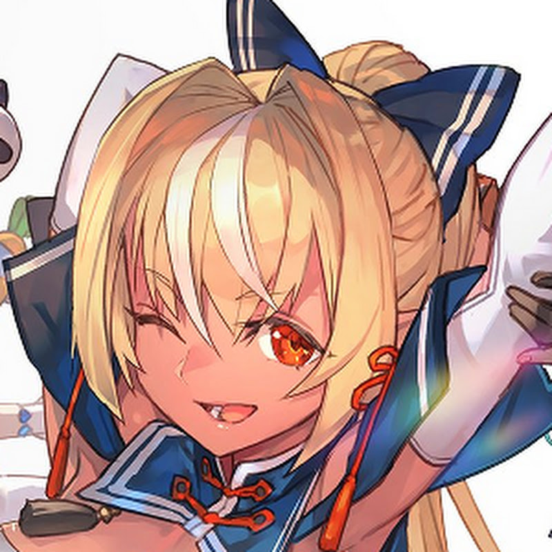 不知火フレア：
hololive三期生，擅長繪圖跟企畫合作的聯絡人，中性姊貴的聲音，陽角。holo MC廢人擔當，像是守護妖精一樣暗地的維護holo MC。 個性開朗很會照顧人，跟團長關係非常要好，被女僕稱為第二媽媽。
中性聲線非常的帥氣，連狐狸也抵擋不住，不經意會作出貼心男友的舉動。
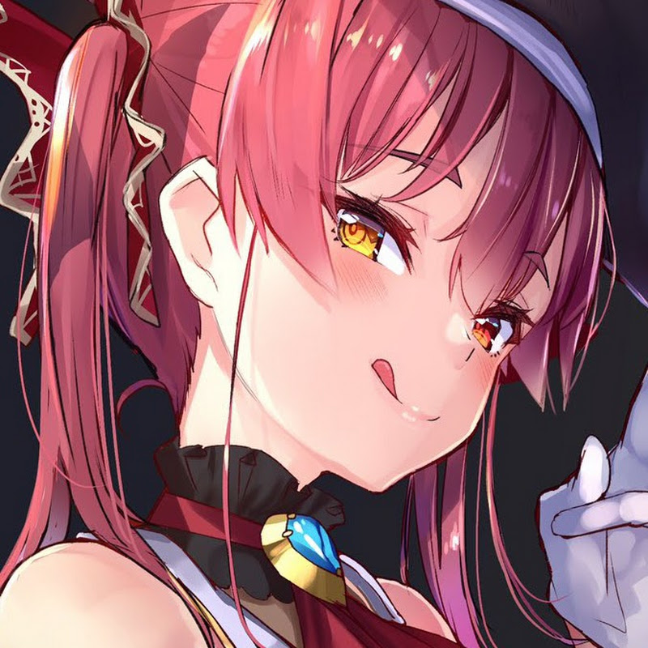 宝鐘マリン(船長)：
hololive三期生，繪圖能力專業級的藝人，跟死靈有明顯的百合營業。
船長由於聲音酷似大谷育江而且唱歌的選曲久遠，被人懷疑有50歲，常玩光彥梗。 目前開始大量合作而與犬山老師有交流，強力推廣櫻花大戰與東方， 雜談力堪稱hololive最強，有許多搞笑舉動，社畜時期被稱為不可思議之子。
hololive三期生，語尾帶ぺこ，RAP藝人以及暴言擔當，遊戲反射神經還不錯， 努力家，唱歌能力跟女僕差不多。
在holo MC非常活躍，吸引了許多箱內觀眾，心理測試顯示為強勢腹黑策士愛錢性格。
三期生的王牌，與巫女有強大的信賴關係，唯一敢對其惡作劇的前輩。 由於有嚴重的交流障礙，線下時常常因為緊張存在感薄弱，被戲稱為網路弁慶。 破關超魔界村以及不使用即時存檔接關過完號稱最鬼畜的馬利歐2。
在ARK流行時一度組成CAMP ARK四大廢人，換地圖後遊玩時數下降， 沉迷於MGS後人氣超幅成長。
特徵是具備魔性的笑聲HA↗HA↘HA↗HA↘，在JP 麥塊伺服中建造了大量的自動工業建設，兔田建設為目前最強大的建設公司之一，也是與Moona相遇的關鍵。
潤羽るしあ(露西亞/初號機)：hololive三期生，可愛擔當，有時會顯露出抖S的氣質，是電腦白痴，實況內容以手機恐怖遊戲，雜談，寶可夢等等。
在三期生線下會時解放性格，聲音出奇的大，一句"活該"徹底改變配信風格，成了遜炮奇聲藝人，換新衣裝後從綠毛變成粉毛。 由於初號機影片的關係，有更多人認識這位狂戰士。 對了，千萬不能在本人面前提起砧板或平坦這兩個字。
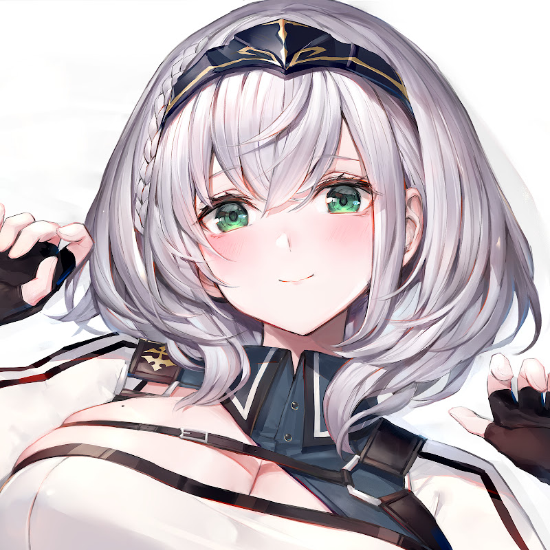 白銀ノエル(團長)：
hololive三期生，蠢萌エロ大姊姊擔當，不太擅長玩遊戲，清楚的SSR聲線出道2周訂閱隨即突破3萬人，一舉超越率先出道的兔田與死靈。
腦筋團長的實況內容以雜談或是ASMR居多，玩遊戲需要人介護，因ASMR被水管取消收益化。
收益化回復後將ASMR改成立體音響，食量很大，非常喜歡牛肉丼飯，與不知火是一對。
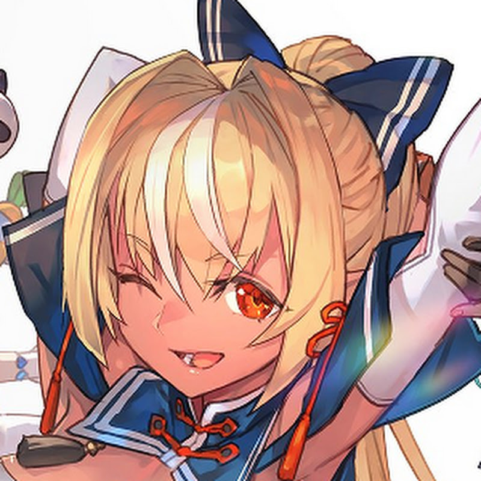 不知火フレア：
hololive三期生，擅長繪圖跟企畫合作的聯絡人，中性姊貴的聲音，陽角。holo MC廢人擔當，像是守護妖精一樣暗地的維護holo MC。 個性開朗很會照顧人，跟團長關係非常要好，被女僕稱為第二媽媽。
中性聲線非常的帥氣，連狐狸也抵擋不住，不經意會作出貼心男友的舉動。
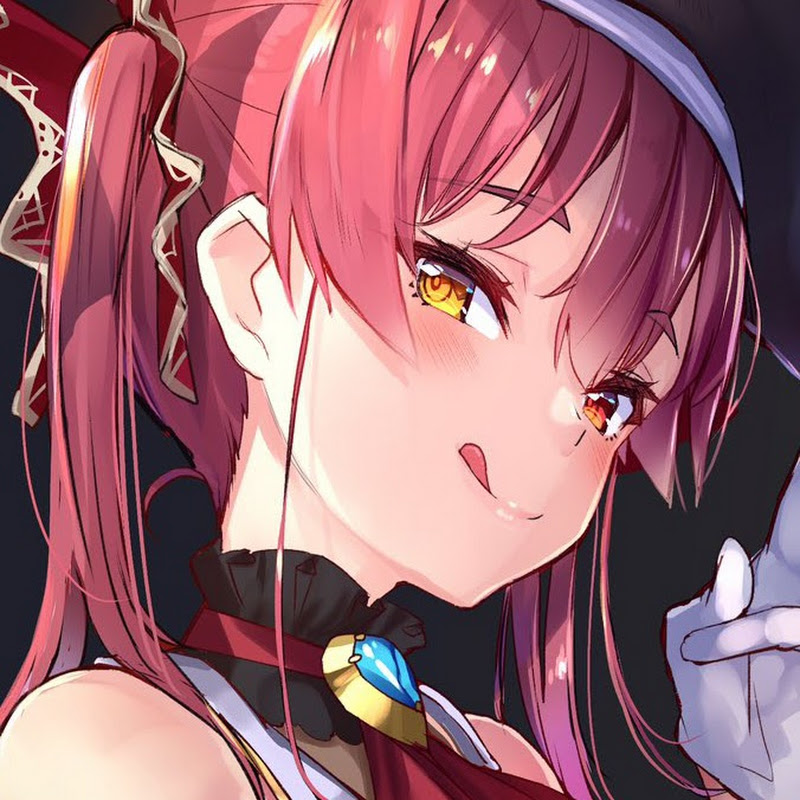 宝鐘マリン(船長)：
hololive三期生，繪圖能力專業級的藝人，跟死靈有明顯的百合營業。
船長由於聲音酷似大谷育江而且唱歌的選曲久遠，被人懷疑有50歲，常玩光彥梗。 目前開始大量合作而與犬山老師有交流，強力推廣櫻花大戰與東方， 雜談力堪稱hololive最強，有許多搞笑舉動，社畜時期被稱為不可思議之子。
天音かなた(PP天使)：
遜炮天使，初配信以ソーラン節引起熱烈回響，以遊戲配信為主， 想要學兔田挑戰超魔界村卻連連失敗終於動用即時存檔，唱歌跟雜談都不錯， 由於初配信以及之後都很喜歡用PPT作雜談節目，被會長冠上PP天使的綽號， 簡稱PP，唱低音歌曲的能力非常強大，自稱以燃燒生命的方式唱歌， 具有煽動人心的魔力。老毛病檢查出院後歌唱功力明顯不如以往。
目前PP天使，會長與星街同居中，稱為同居組，握力有50kg。
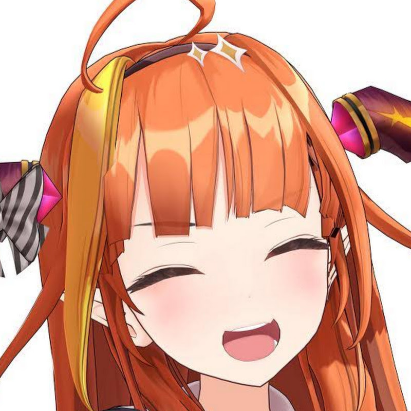 桐生ココ(會長)：
君臨hololive的外國龍王，初配信以史詩動畫爆破holo本社，早晨的可可live則類似VB各種玩梗嘲諷的20分鐘配信，日文用詞很迷，有很重的外國口音，幫助四期生玩出各種特色，是四期生的中心人物。
曾經被youtube AI BAN過直播權數天又解除，正是桐生之龍不可或缺的經歷。 將ARK風潮推廣到hololive之中引起極大的熱潮， 但與麥塊命運相同也不免落入遊玩人數減少的命運。
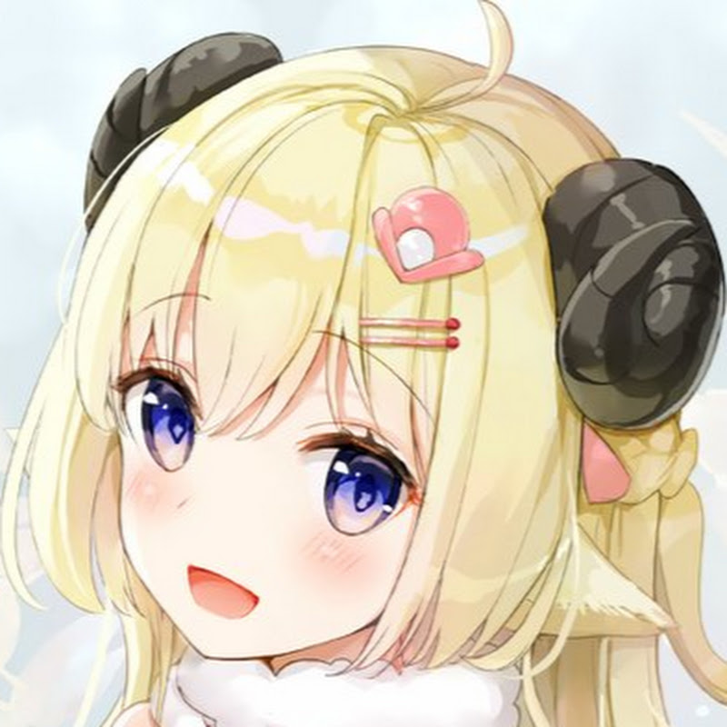 角巻わため：
聲音酷似有地方口音的唯媽，網路雜魚，可能有羊騷味，唱歌功力不錯， 網路斷線變成一種梗每次斷線觀眾都會幫忙計數，目前最高次數一次配信斷線61次， 自創RAP的能力驚人。
網路問題解決後與會長密切合作，穩定成長中。
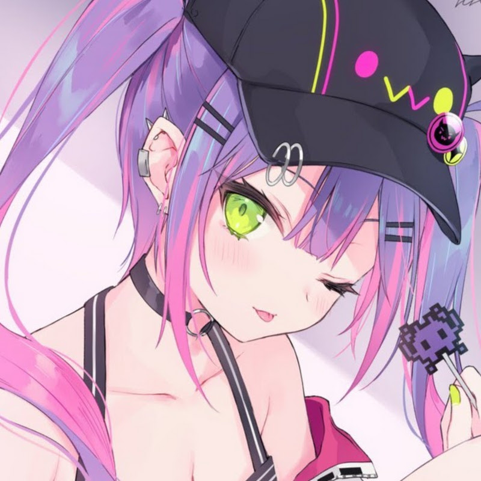 常闇トワ(惡魔)：
擅長FPS遊戲，經常在早上進行直播，唱歌有獨特的低音聲線，海外觀眾居多。
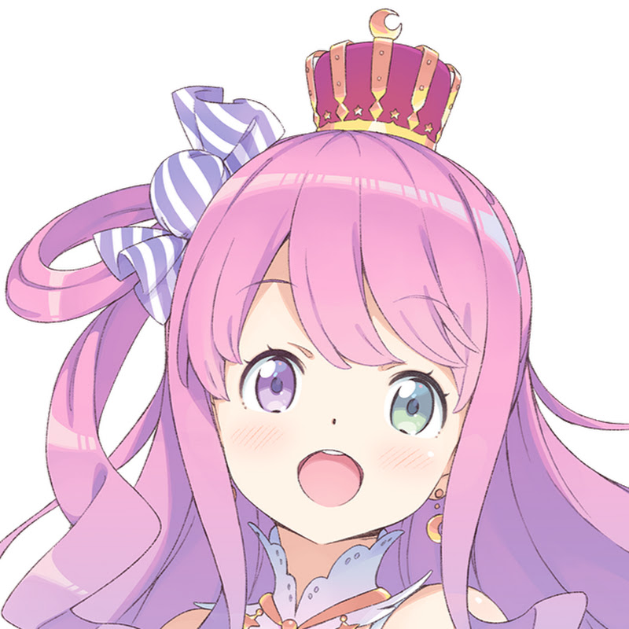 姫森ルーナ(公主)：
幼兒般的聲音，喜歡老遊戲，與FAMS成員混得不錯， 因為聲音很欠打跟船長或486組合效果出眾， 深夜電子琴節目獲得不錯的回響。
遜炮天使，初配信以ソーラン節引起熱烈回響，以遊戲配信為主， 想要學兔田挑戰超魔界村卻連連失敗終於動用即時存檔，唱歌跟雜談都不錯， 由於初配信以及之後都很喜歡用PPT作雜談節目，被會長冠上PP天使的綽號， 簡稱PP，唱低音歌曲的能力非常強大，自稱以燃燒生命的方式唱歌， 具有煽動人心的魔力。老毛病檢查出院後歌唱功力明顯不如以往。
目前PP天使，會長與星街同居中，稱為同居組，握力有50kg。
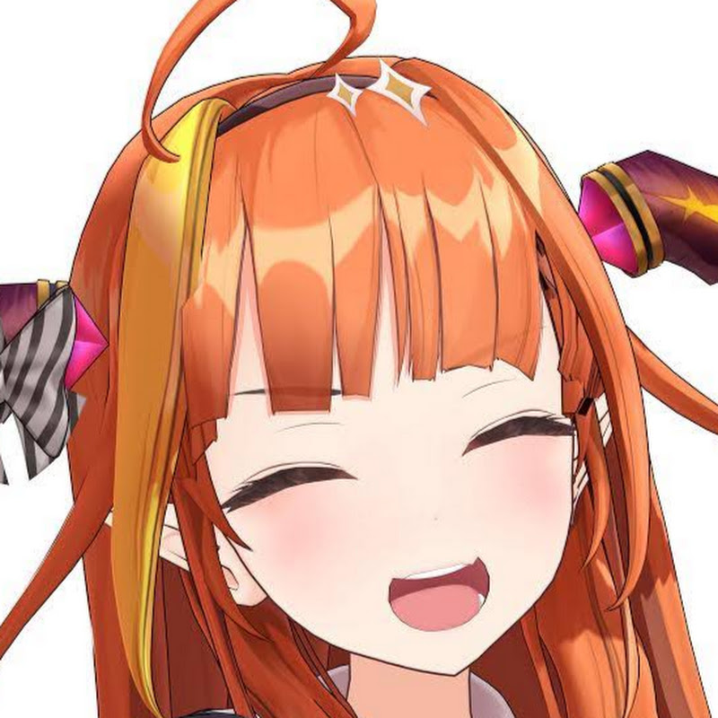 桐生ココ(會長)：
君臨hololive的外國龍王，初配信以史詩動畫爆破holo本社，早晨的可可live則類似VB各種玩梗嘲諷的20分鐘配信，日文用詞很迷，有很重的外國口音，幫助四期生玩出各種特色，是四期生的中心人物。
曾經被youtube AI BAN過直播權數天又解除，正是桐生之龍不可或缺的經歷。 將ARK風潮推廣到hololive之中引起極大的熱潮， 但與麥塊命運相同也不免落入遊玩人數減少的命運。
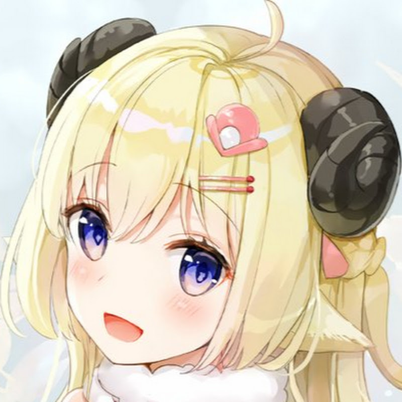 角巻わため：
聲音酷似有地方口音的唯媽，網路雜魚，可能有羊騷味，唱歌功力不錯， 網路斷線變成一種梗每次斷線觀眾都會幫忙計數，目前最高次數一次配信斷線61次， 自創RAP的能力驚人。
網路問題解決後與會長密切合作，穩定成長中。
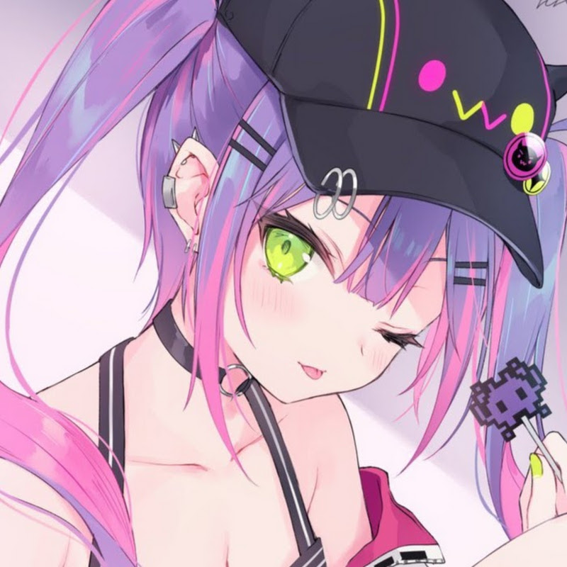 常闇トワ(惡魔)：
擅長FPS遊戲，經常在早上進行直播，唱歌有獨特的低音聲線，海外觀眾居多。
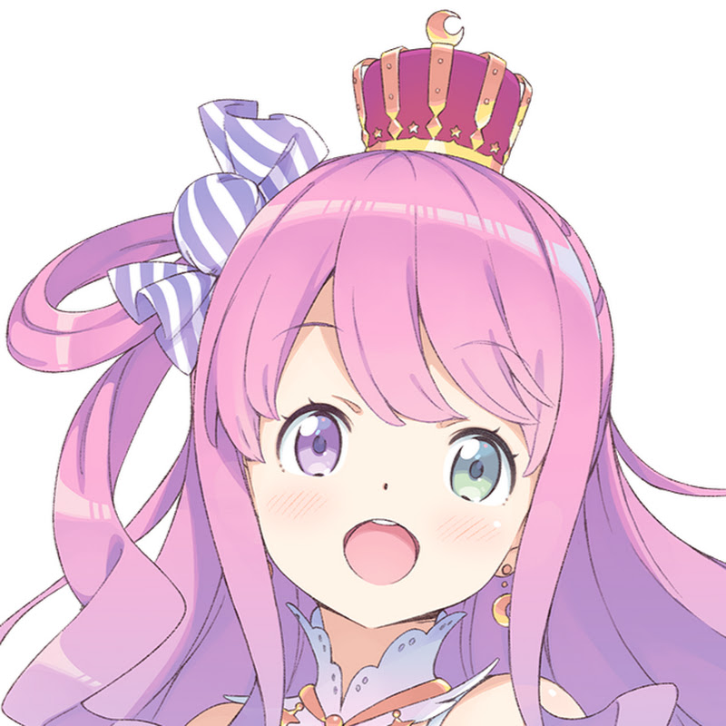 姫森ルーナ(公主)：
幼兒般的聲音，喜歡老遊戲，與FAMS成員混得不錯， 因為聲音很欠打跟船長或486組合效果出眾， 深夜電子琴節目獲得不錯的回響。
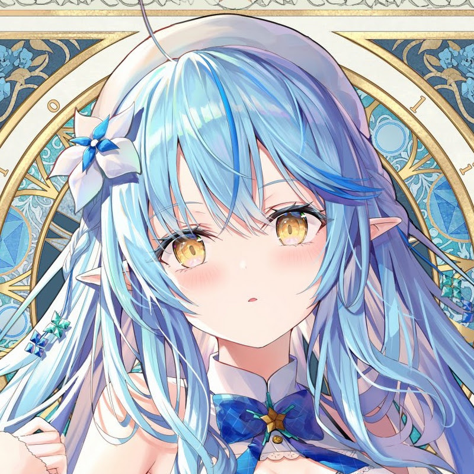
雪花ラミィ(雪媽)：
由於一開始出道給予成員鼓勵的聲音，被當作媽媽看待，連狐狸也拿了一份， 主要在早晨雜談直播，魔性之女，不自覺勾引許多人，酒中豪傑， 與五期生一起去迪士尼樂園玩時買了兩大瓶啤酒來喝，還讓ねね誤以為一瓶是要買給她的。
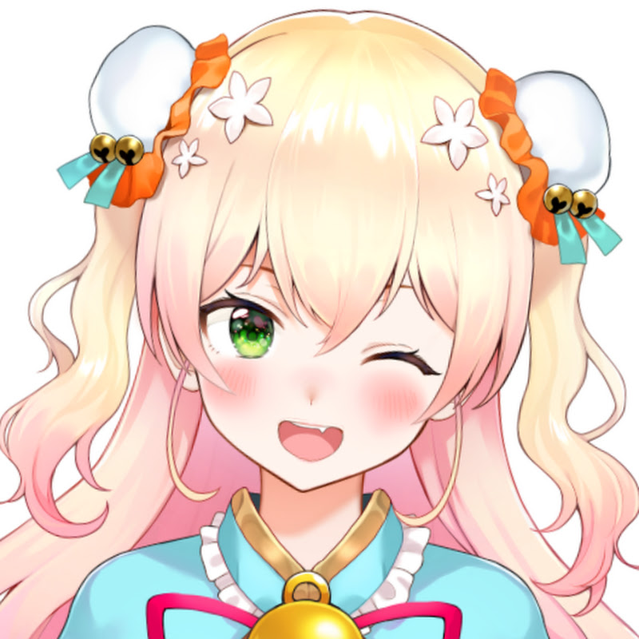 桃鈴ねね(NeNe/社長)：
由於中華風一開始並不討喜，但由於標題圖跟實況方式太過遜炮， 反而誕生獨一無二的特色，日常ね又遜，唱歌有實力又很可愛， 由於實況Good Job!在遊戲中大肆破壞以及麥塊建造5期生大樓另有社長的稱呼。
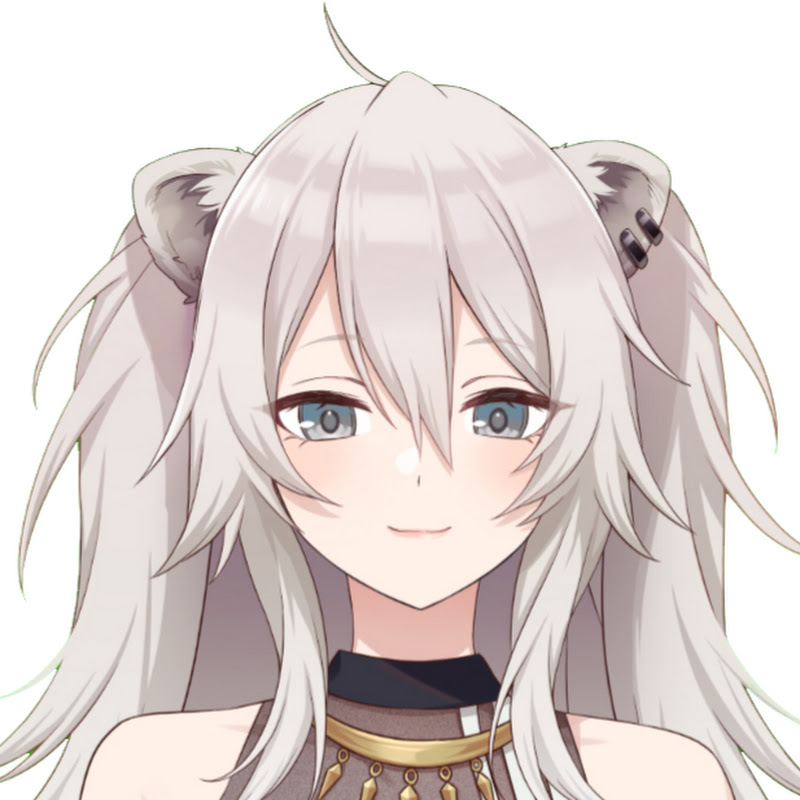 獅白ぼたん(獅子)：
Hololive有史以來最強遊戲勢，擅長各種歐美遊戲，COD，R6，APEX等等。 電腦為自組PC，使用2PC實況。 在巧可老師身體檢測合作學力測驗項目拿到28點，是目前合作對象中最高成績。 被5期生戲稱為什麼都做得到的獅白牡丹。
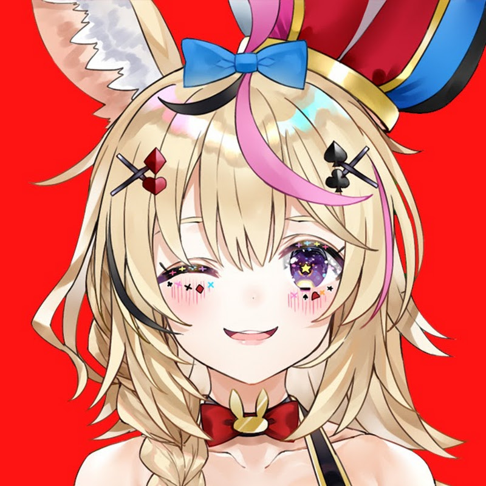 尾丸ポルカ(座長)：
出道後即刻各種玩梗的狂人，以廢片混合直播的方式，遊戲玩得很爛， 但是雜談自由奔放，由於雜談會出現與平常極大的失落反差， 被reddit拿來玩小丑梗，放開RP後歌唱功力極高。
由於一開始出道給予成員鼓勵的聲音，被當作媽媽看待，連狐狸也拿了一份， 主要在早晨雜談直播，魔性之女，不自覺勾引許多人，酒中豪傑， 與五期生一起去迪士尼樂園玩時買了兩大瓶啤酒來喝，還讓ねね誤以為一瓶是要買給她的。
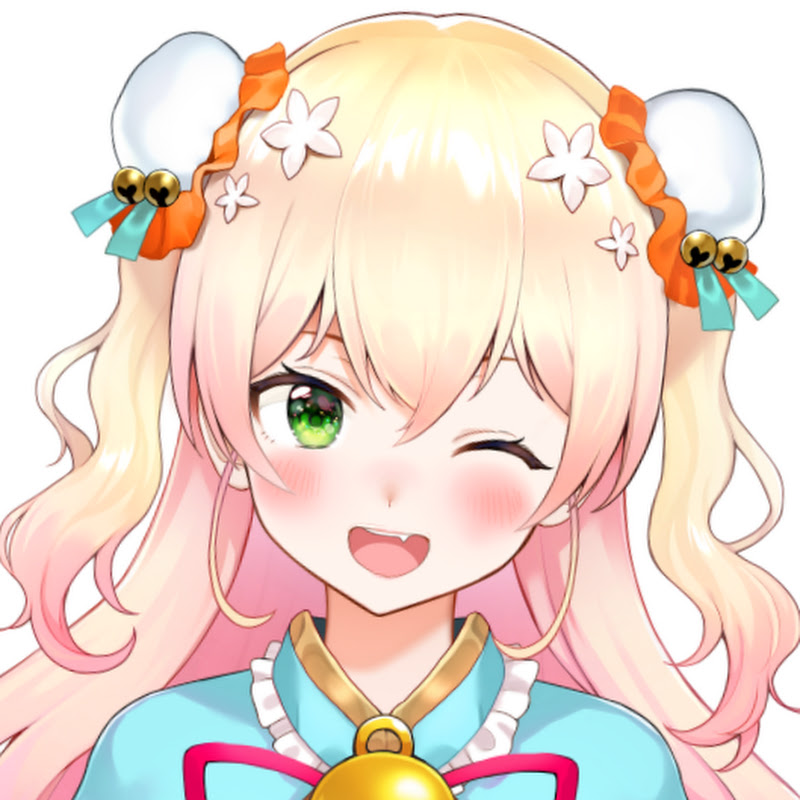 桃鈴ねね(NeNe/社長)：
由於中華風一開始並不討喜，但由於標題圖跟實況方式太過遜炮， 反而誕生獨一無二的特色，日常ね又遜，唱歌有實力又很可愛， 由於實況Good Job!在遊戲中大肆破壞以及麥塊建造5期生大樓另有社長的稱呼。
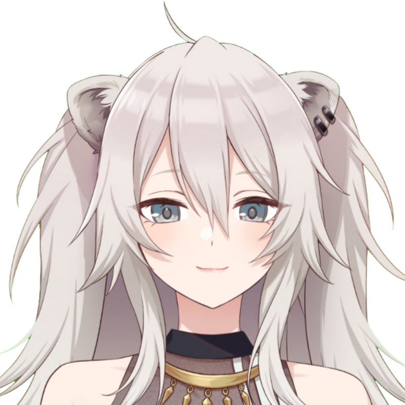 獅白ぼたん(獅子)：
Hololive有史以來最強遊戲勢，擅長各種歐美遊戲，COD，R6，APEX等等。 電腦為自組PC，使用2PC實況。 在巧可老師身體檢測合作學力測驗項目拿到28點，是目前合作對象中最高成績。 被5期生戲稱為什麼都做得到的獅白牡丹。
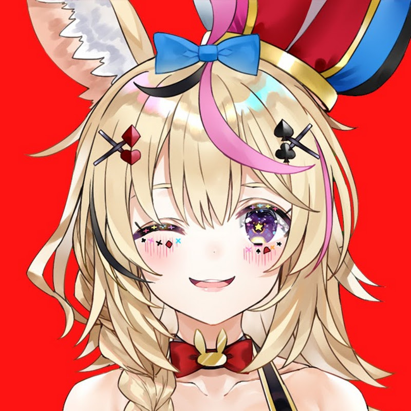 尾丸ポルカ(座長)：
出道後即刻各種玩梗的狂人，以廢片混合直播的方式，遊戲玩得很爛， 但是雜談自由奔放，由於雜談會出現與平常極大的失落反差， 被reddit拿來玩小丑梗，放開RP後歌唱功力極高。
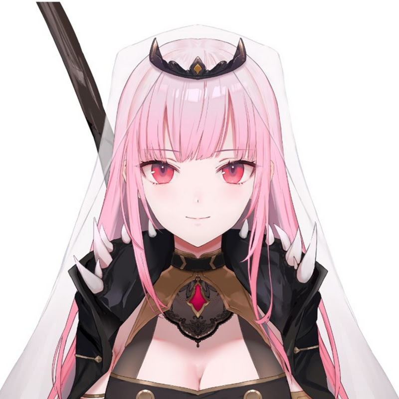
Mori Calliope(森美声/死神)：
Rap之神，剛出道就發布一堆原創曲，酒豪，喜好雜談。
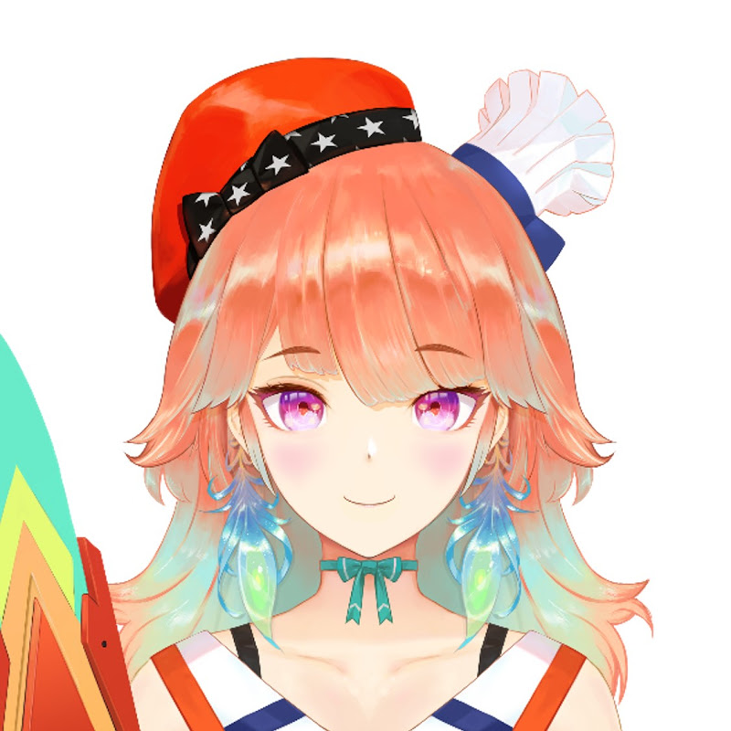 Takanashi Kiara (小鳥遊キアラ/火雞)：
不死鳥，精通日文與德文，各種企劃遊戲嘗試中，線下會中與死神去泳池住飯店， 已經攻略死神成功，是一隻瘋狂的野兔，曾經與ねね線下卡拉OK成立橘色組合， 但是因為ねね愛的是Ina在5期與EN的宇宙人狼合作中又馬上拆夥。
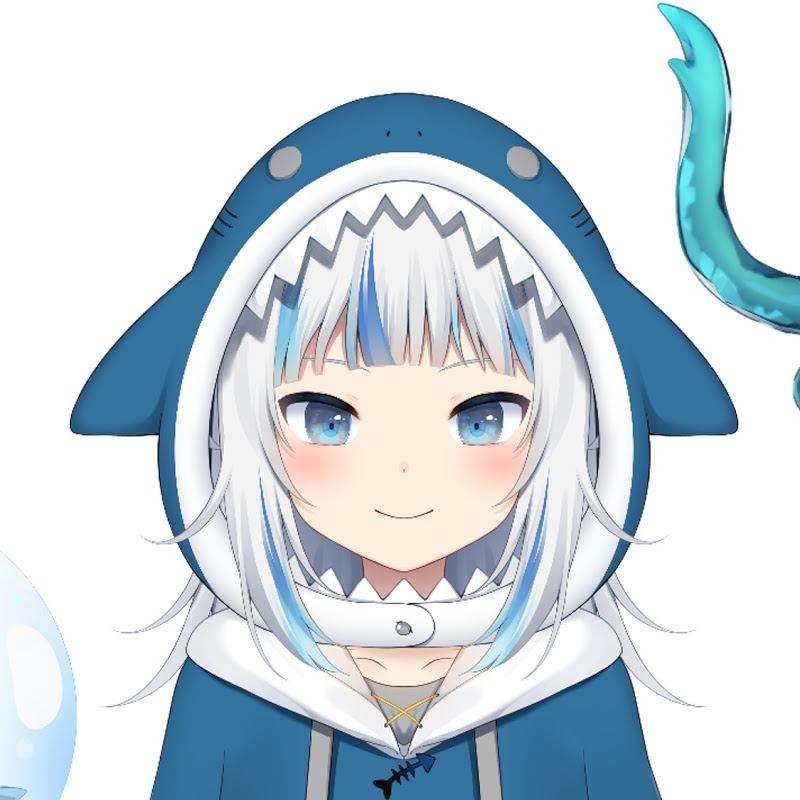 Gawr Gura(がうる・ぐら/Gura/鯊魚)：
可愛的化身，出道的"a"生產了一堆meme，擅長音遊，幹話王， 是可愛的屁孩類型，曾經有MC 3小時只做了1道門的偉業，唱歌非常可愛。
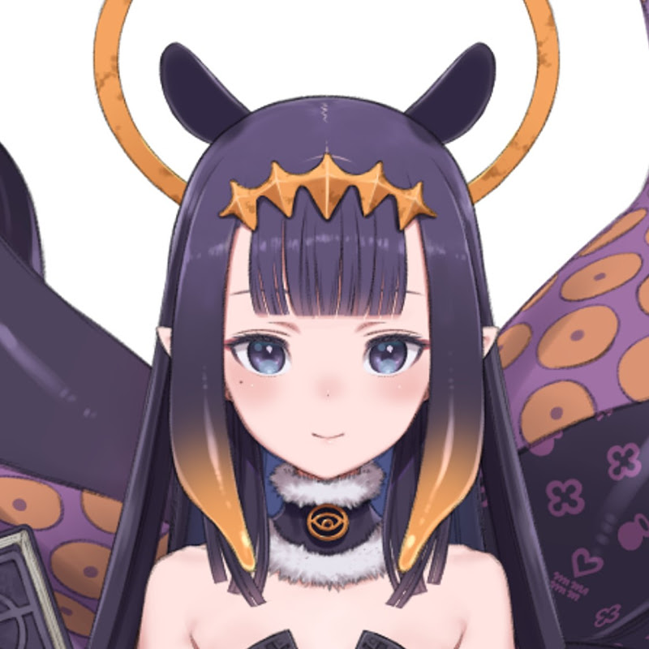 Ninomae Ina'nis(一伊那尓栖/章魚/Ina)：
超越船長的神繪師，冷笑話大叔，用冷笑話破壞觀眾的SAN值。
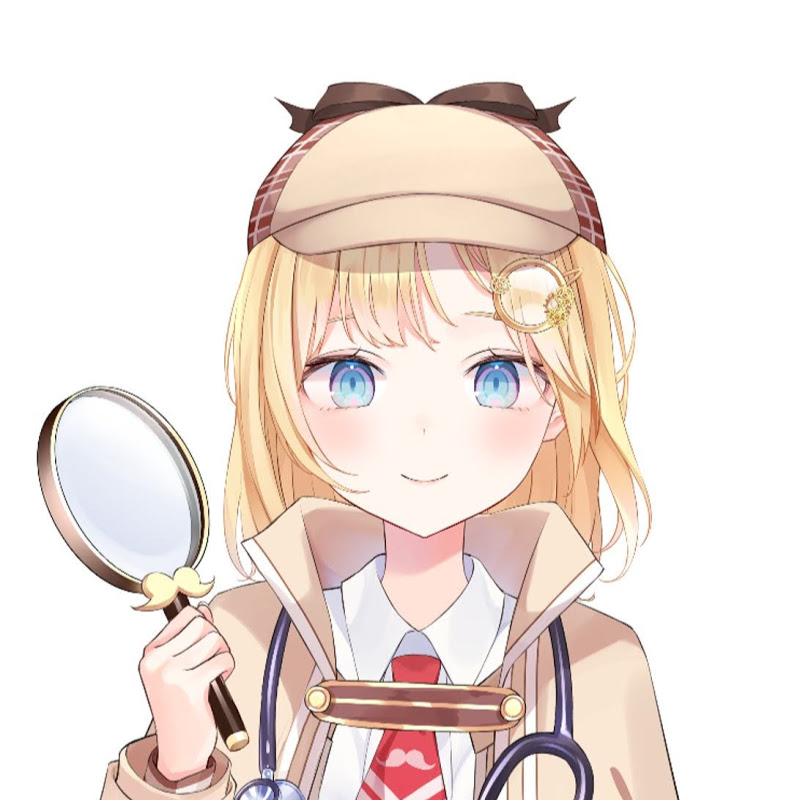 Watson Amelia(ワトソン・アメリア/華生/Ame/阿梅)：
一出場就吃毒，被稱作2代はあちゃま，喜歡FPS遊戲，嘴王，與鯊魚關係很好。
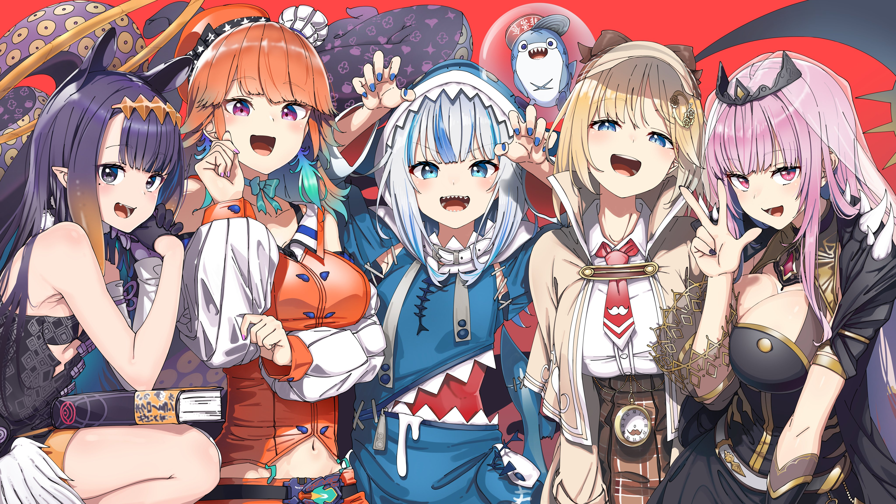
Rap之神，剛出道就發布一堆原創曲，酒豪，喜好雜談。
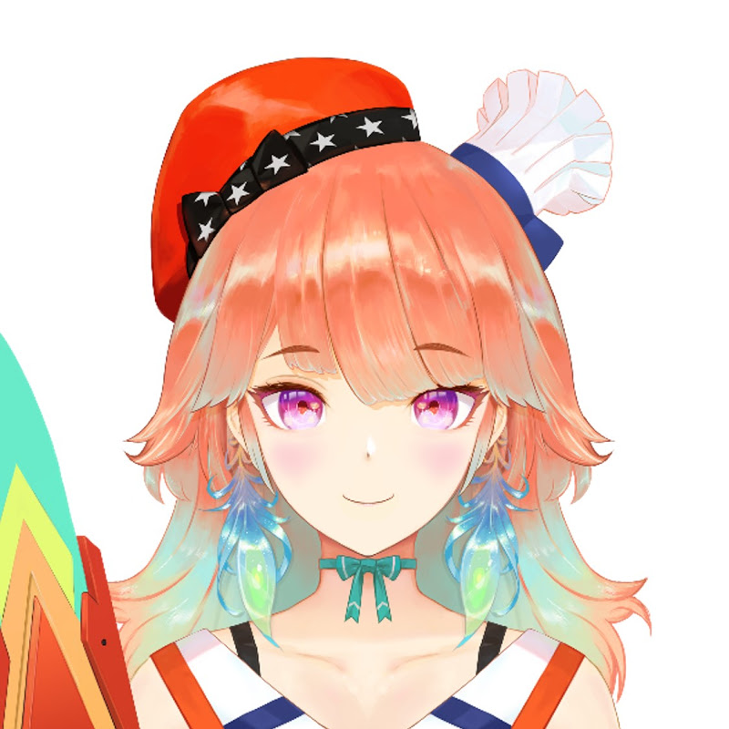 Takanashi Kiara (小鳥遊キアラ/火雞)：
不死鳥，精通日文與德文，各種企劃遊戲嘗試中，線下會中與死神去泳池住飯店， 已經攻略死神成功，是一隻瘋狂的野兔，曾經與ねね線下卡拉OK成立橘色組合， 但是因為ねね愛的是Ina在5期與EN的宇宙人狼合作中又馬上拆夥。
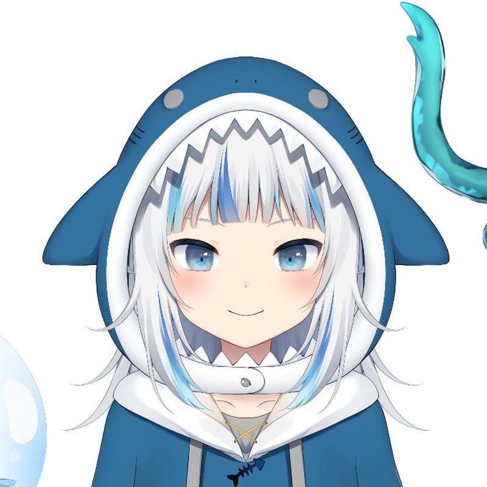 Gawr Gura(がうる・ぐら/Gura/鯊魚)：
可愛的化身，出道的"a"生產了一堆meme，擅長音遊，幹話王， 是可愛的屁孩類型，曾經有MC 3小時只做了1道門的偉業，唱歌非常可愛。
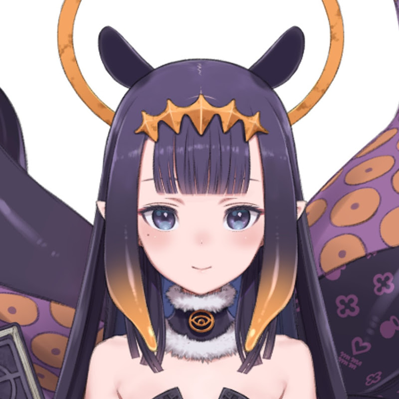 Ninomae Ina'nis(一伊那尓栖/章魚/Ina)：
超越船長的神繪師，冷笑話大叔，用冷笑話破壞觀眾的SAN值。
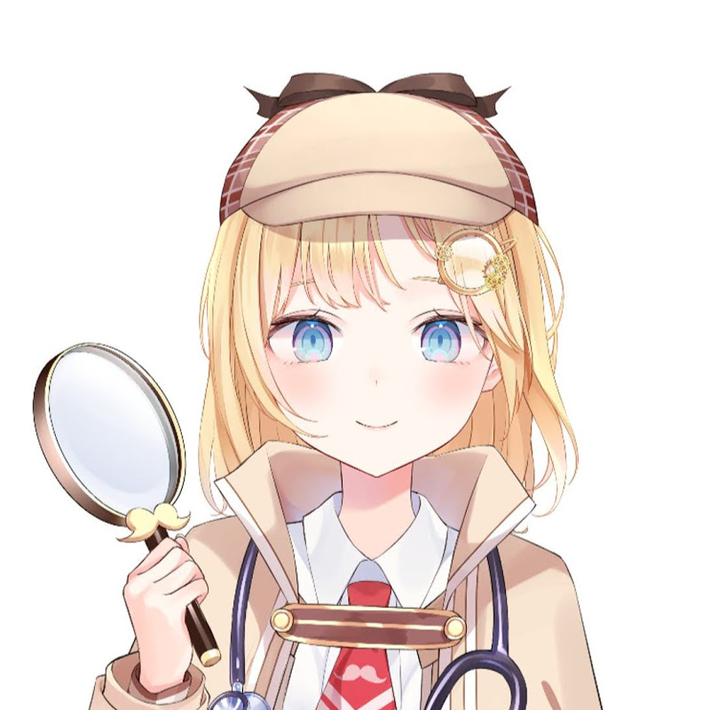 Watson Amelia(ワトソン・アメリア/華生/Ame/阿梅)：
一出場就吃毒，被稱作2代はあちゃま，喜歡FPS遊戲，嘴王，與鯊魚關係很好。